The Lord of the Wings
Hello
Sean Kelly here. This is the prologue for the expanded comic
version of "The Lord of the Wings." Expect the actual story to
start soon.
*Just as a note* - This comic series is a parody of the popular "The Lord of the Rings" series, which was written by J.R.R. Tolkien. The series was made into a beautiful movie trilogy by New Line Cinema. This comic series was not written to deny Tolkien any credit for his work. It is simply a parody. Thank you.
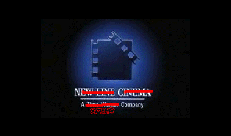
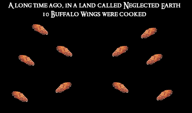
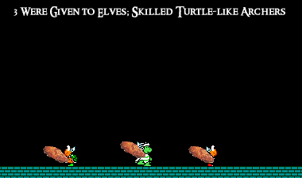
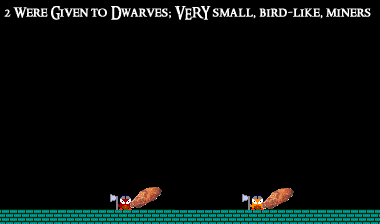
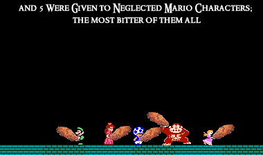
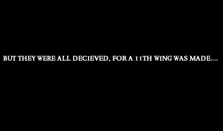
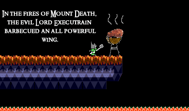
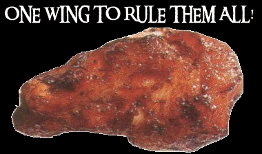
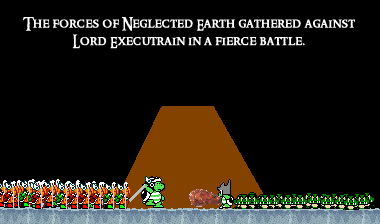
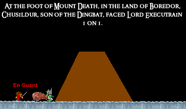
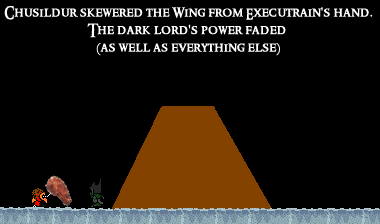
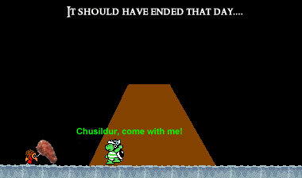
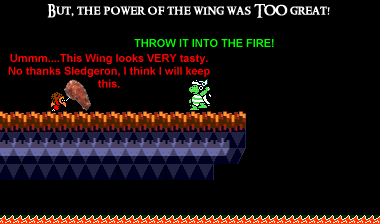
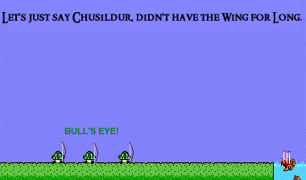
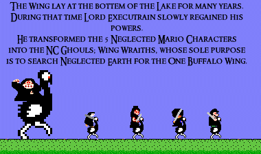
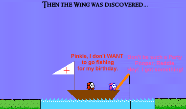
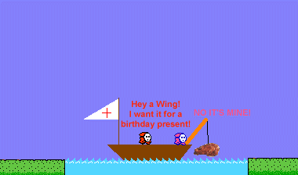
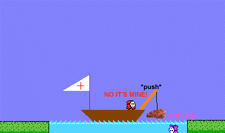
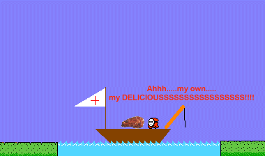
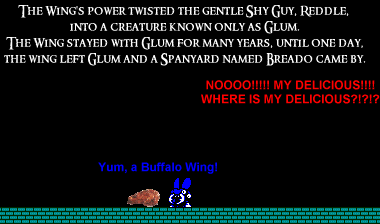

Go back to NC